Pràctica 3. Instal·lació de la Linkat
Un cop tenim la màquina preparada i hem seleccionat la imatge ISO, o bé la hem posat al CD la posem en funcionament, i amb unes petites passes podem tenir en funcionament la nostra Linkat. El temps de instal·lació dependrà de la màquina que tinguem, però amb uns 30 minuts la podem tenir en funcionament.
Anem a veure les passes que ens fan falta.
Passes per fer la instal·lació de la LINKAT
Seguirem aquestes petites passes:
Pas 1. Podem triar si provar el sistema o fer la instal·lació. Triem la segona.
Pas 2. Seleccionem l'idioma de instal·lació. Català.
Pas 3. Ens avisa si no tenim prou espai al disc, o si no tenim connexió a Internet. Podem seguir sense activar ni les actualitzacions, ni instal·lant el programari de tercers, sempre ho podem fer després.
Pas 4. Ens diu si volem agafar tot el disc, d'entrada direm continuar, si mai volem instal·lacions més personalitzades, podem investigar una mica més.
Pas 5. Ens avisa que esborrarà tot el disc i es perdran les dades que hi han, seguim endavant.
Pas 6. Ens demana la franja horària. Normalment ja ens la dona correctament.
Pas 7. Ens demana quina configuració de teclat tenim. Podem deixar la que ens dona per defecte.
Pas 8. Ens demana que posem un usuari. Compte! Aquest usuari serà l'administrador del ordinador, per tant posarem un usuari especial, Super, Suport, ... i després ja crearem l'usuari alumne, prof, ... que serà el que faci servir l'ordinador normalment.
Pas 9. Comença la instal·lació i ja no ens demanarà res més fins que s'hagi de reiniciar.
Pas 10. Reiniciar, i entrar amb l'usuari administrador.
Pases visuals de la instal·lació
- Pas 1. Podem triar si provar el sistema o fer la instal·lació. Triem la segona.
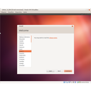
Pas 2. Seleccionem l'idioma de instal·lació. Català.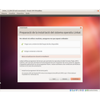
Pas 3. Ens avisa si no tenim pru espai al disc, o si no tenim connexió a Internet.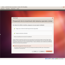
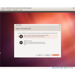
Pas 4. Ens diu si volem agafar tot el disc, d'entrada direm continuar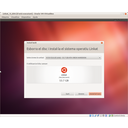
Pas 5. Ens avisa que esborrarà tot el disc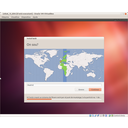
Pas 6. Ens demana la franja horària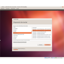
Pas 7. Ens demana quina configuració de teclat tenim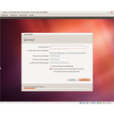
Pas 8. Ens demana que posem un usuari.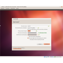
Pas 8. Ens demana que posem un usuari.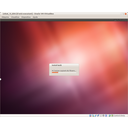
Pas 9. Comença la instal·lació i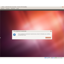
Pas 10. Reiniciar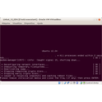
Reinici de l'ordinador- Carrega de l'ordinador
- Entrada de l'usuari
- Escriptori de treball


Llicenciat sota la Llicència Creative Commons Reconeixement NoComercial CompartirIgual 4.0